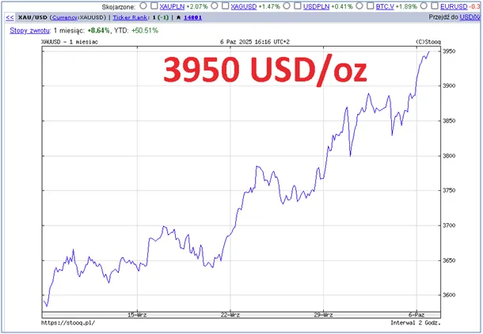
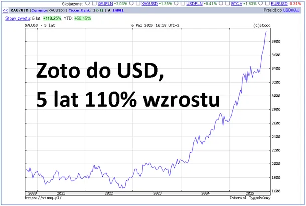

Złoto! Nie jest ważne po ile kupujesz, ale po ile sprzedajesz!
Złoto bije rekordy dzień po dniu. Pierwszy wykres to zaledwie miesiąc i 8.6 % wzrostu, drugi wykres to 5 lat i ponad 110 % wzrostu.

Zadowoleni mogą być tylko Ci, którzy swoje oszczędności już w złocie ulokowali wcześniej. Czy teraz kupować? Tego nie wie nikt! Ale jest prosta przesłanka: "Nie rób tego co robią wszyscy!" Z internetu wylewają się reklamy oferujące złoto, po ich treści widać, że są kierowane obecnie do ludzi z tym tematem nie obeznanych. Dziś najgorszą ofertą jest moneta "jubileuszowa". Nie różni się ona od innych niczym poza rokiem emisji. W chwili biedy, a wtedy sprzedaje się złoto, oczywiście znajdziemy szybko zapalonego numizmatyka... Oczywiście szydzę. Wtedy tylko będzie ważna waga monety i jej wiarygodność.

Dzisiejszy bum polega na efekcie maksimum, złoto pobiło swoje maksimum historyczne, ale czy stanieje czy nie, nikt nie wie. Wystarczy, że dowolny rząd dużego kraju w swych strapieniach zacznie wyprzedawać rezerwy i do kolejnego maksimum poczekamy kilka lat. Większość ofert to "złoto "papierowe" czyli dokument "gwarantujący " wymianę na złoto w dowolnej chwili. Ciekawe, że te gwarancje dotyczą dowolnej chwili ale nie dziś.
Złoto jest nam potrzebne na czasy trudne, gdy wszystko inne zacznie zawodzić, wtedy nie będzie śladu po tych wszystkich stronach w internecie, gdzie dziś naiwni ludzie robią "inwestycje". Prawda jest taka, że trudne czasy mamy od wielu lat i waluty było trzeba się pozbywać najpóźniej 5 lat temu.
Równolegle do złota drożeją mieszkania i ziemia, ale w ostatnim czasie mamy mocne hamowanie cen mieszkań z prostego powodu: demografia. Domów i mieszkań przybywa a ludzi ubywa, czy mieszkania mogą w tej sytuacji drożeć ? Dziecko wie, że nie, ale eksperci będą Was przekonywać, że jest inaczej.
W Polsce mieszkań i domów jest za dużo, a tzw. "trudna sytuacja mieszkaniowa" wynika z patologicznej kultury w jakiej się nurzamy od 30 lat. Puste duże domy na wsi i młodzi w ciasnych kawalerkach na kredy w mieście, to obraz współczesnej Polski. Co gorsza, samotnych ludzi na wsi nie stać już na ogrzewanie swych pustych domów i ich losy są coraz trudniejsze. O złocie napisałem kilka tekstów, bo to bardzo ważny temat, pokazuje ono jak słaba jest ekonomia naszej cywilizacji, jak słaba jest waluta papierowa, szczególnie dolar nazywany antyzłotem. Zapraszam do lektury: https://pawelklimczewski.pl/?s=z%C5%82oto
Paweł Klimczewski